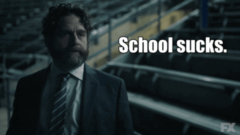

The Story is Familiar...
Around March 2020, students across the country went home after COVID-19 pandemic making remote school a norm. For all of the changes that came with this, one of the biggest was the lack of informal social interactions. Be it meeting with a partner in the three minutes after class or catching up with a friend on the way to or from a study session, these informal interactions often define an in-person school experience.
This is the motivation for building a virtual hallway. The goal is to recreate the experience missing from in person classes to recoupe some of the invaluable informal conversations that happen immediately before and immediately after class. Catch up even more with announcements boards and a casual passing smile!